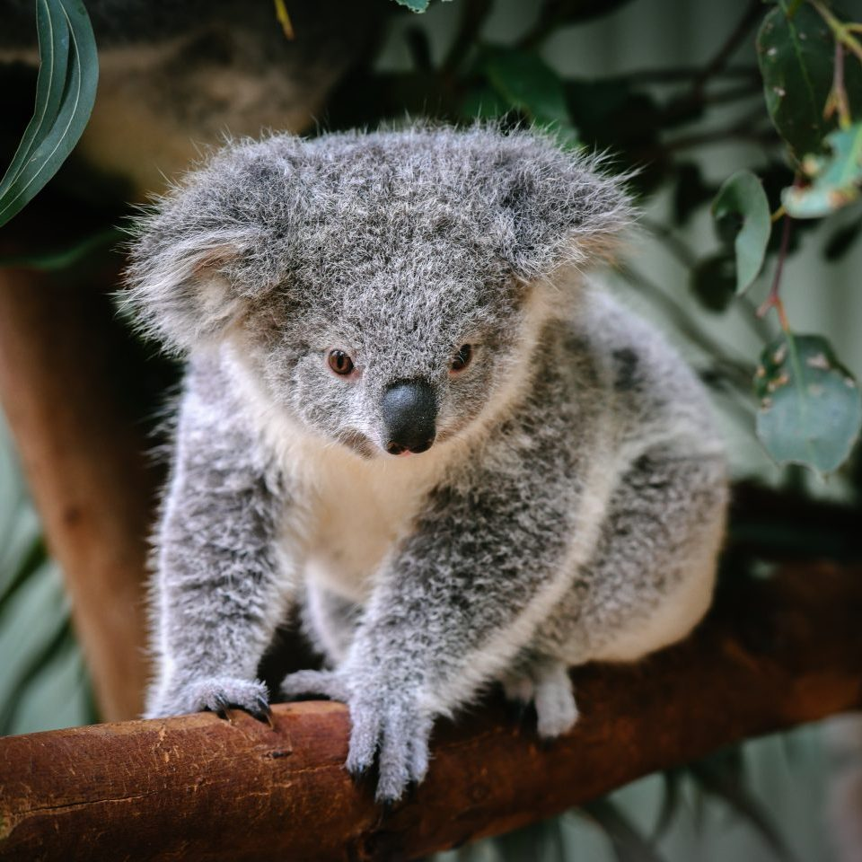
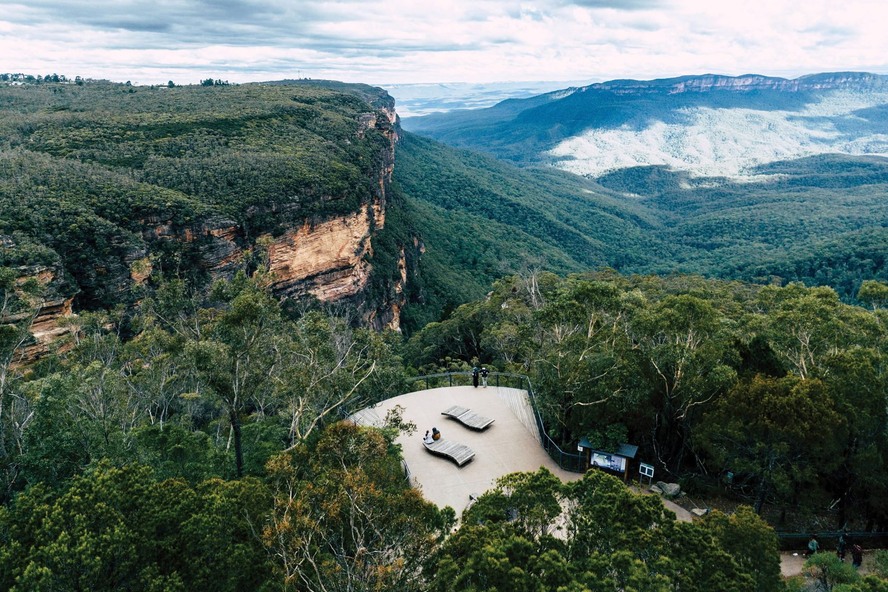

Trip Overview
Trip Details
- Duration: 14 days (Apr 18 - May 1, 2025)
- Accommodation: Granny annex in Matraville (partial stay)
- Transportation: Rental car for the entire trip
- Special Events: Aussie Rules Football (Easter Sunday), Anzac Day (Apr 25)
- Pre-planned Trips: Great Pacific Drive, Kiama (2 nights), Blue Mountains (1 night)
- Family Visits: April 27-28
Trip Highlights
- Sydney Opera House & Harbour Bridge
- Blue Mountains National Park
- Kiama Blowhole & Coastal Walks
- Great Pacific Drive scenic route
- Sydney Harbour Boat Trip
- Aussie Rules Football Game
- Anzac Day Commemorations
- Australian Wildlife Experiences
Detailed Itinerary
Day 1: Friday, April 18 - Arrival in Sydney
5:20pm
- Arrive at Sydney Airport (SYD)
- Check into accommodation
Evening
- Rest and refresh
- First views of Opera House
- Early night to recover from jet lag
Travel Tip:
Purchase an Opal card for public transport. Available at airport shops, minimum $20 to start.
Day 2: Saturday, April 19 - Bondi Beach Experience
Morning
- Breakfast at a local café
- 12 noon - Pick up rental car
- Drive to Bondi Beach
- Walk along the famous beach
Afternoon
- Bondi to Coogee coastal walk
- Visit Bondi Graffiti Wall
Evening
- Vegetarian dinner at Bangkok Bites
- Return to accommodation
Travel Tip:
Apply sunscreen generously and reapply throughout the day - Australia's sun is extremely strong.
Day 3: Sunday, April 20 - Aussie Rules Football Game
Morning
- Breakfast at accommodation
- Go to John's
- Check into Matraville accommodation
Afternoon
- Sydney Swans vs Port Adelaide
- First bounce: 3:20pm
Aussie Rules Football:
- Sydney Cricket Ground (SCG)
- Gates open: 1:30pm
- Game start: 3:20pm
Days 4: Monday, April 21 - Great Pacific Drive
Morning
- Early start for Great Pacific Drive
- Royal National Park
- Stanwell Park (Return to Paradise)
- Drive across Sea Cliff Bridge (Return to Paradise)
Afternoon
- Arrive in Kiama
- Check into accommodation
- Visit famous Kiama Blowhole
Evening
- Dinner in Kiama
- First night in Kiama
Kiama Highlight:
The Kiama Blowhole is one of the largest in the world, shooting water up to 25 meters in the air when conditions are right.
Days 5: Tuesday, April 22 - Kiama
Morning
- Kiama -> Jervis Bay (1 hour drive)
- Cathedral Rocks
Afternoon
- Explore Kiama Harbour (boat tour?)
Evening
- Dinner in Kiama
- Second night in Kiama
Kiama Highlight:
The Kiama Blowhole is one of the largest in the world, shooting water up to 25 meters in the air when conditions are right.
Day 6: Wednesday, April 23 - Blue Mountains Day 1
Morning
- Leave Kiama early
- Kangeroo Valley
- Fitzroy Falls
- Drive to Blue Mountains (3 hours total)
- Arrive in Katoomba
Afternoon
- Short hike on one of the trails
- Visit Leura village
Evening
- Overnight in Blue Mountains
- Dinner at a local restaurant
Travel Tip:
Ask locals for their favorite hidden gems and vegetarian restaurants in the area.
Day 7: Thursday, April 24 - Blue Mountains Day 2
Morning
- Eagle Hawk Lookout
- Landslide Lookout
- Cahill's and Boars Head Lookout
- 10am Explore Scenic World
- Lunch at Scenic World
Afternoon
- Visit Echo Point (Three Sisters)
Evening
- Return drive to Sydney
Blue Mountains Highlight:
Scenic World offers cable cars, the steepest incline railway in the world, and stunning walkways through ancient rainforest.
Day 8: Friday, April 25 - Anzac Day
Early Morning
- Anzac Day Observance: Dawn Service (Cenotaph, Martin Place), Anzac Day March.
Morning/Afternoon
- Attend Anzac Day March in Sydney (if timing permits)
- Visit Hyde Park and Anzac Memorial
Evening
- Quiet dinner respecting Anzac Day
Anzac Day:
Anzac Day is one of Australia's most important commemorative occasions, honoring those who served in all wars.
Day 9: Saturday, April 26 - Family/Friend Visit (Flexible)
Full Day
- Spend the day with family/friends
- Let them show you their favorite local spots
Day 10: Sunday, April 27 - Family/Friend Visit (Flexible)
Full Day
- Spend the day with family/friends
- Let them show you their favorite local spots
Day 11: Monday, April 28 - Sydney, Sydney Opera House & Darling Harbour
Morning
- Breakfast near accommodation
- The Rocks (historic district).
- Explore The Royal Botanic Garden
- Sydney Opera House guided tour
Afternoon
- Ferry to Darling Harbour
- SEA LIFE Aquarium visit?
- Shopping at Darling Quarter
Evening
- Dinner at a vegetarian-friendly restaurant in Darling Harbour
- Night views of the harbour
Travel Tip:
Book the Opera House tour in advance to secure your preferred time slot.
Day 12: Tuesday, April 29 - Manly Beach Day
Morning
- Drive to Circular Quay
- Ferry to Manly (30-minute scenic ride)
- Explore Manly Beach
Afternoon
- Walk the Manly to Spit Bridge coastal trail (partially)
- Swimming or sunbathing
- Shopping on The Corso
Evening
- Dinner at a waterfront restaurant
- Return ferry at sunset for city lights
Travel Tip:
The Manly Ferry offers one of the best harbor views in Sydney and is much cheaper than tourist cruises.
Day 13: Wednesday, April 30 - Art & Culture Day
Morning
- Visit Art Gallery of NSW
- Explore Aboriginal art collections
Afternoon
- Return rental car
- Museum of Contemporary Art
- Wander through The Rocks historic district
- Souvenir shopping
Evening
- Farewell dinner at a signature vegetarian restaurant
- Evening performance at Sydney Opera House (if available)
Cultural Note:
The Art Gallery of NSW has an excellent collection of Aboriginal and Torres Strait Islander art.
Day 14: Thursday, May 1 - Departure
Early Morning
- Check out of accommodation
- Depart Sydney Airport for UK
Travel Tip:
Allow extra time for airport procedures. Sydney Airport recommends arriving 3 hours before international flights.
Important Locations
Sydney City Center
Key Attractions:
- Sydney Opera House
- Sydney Harbour Bridge
- Circular Quay
- The Rocks
- Royal Botanic Garden
- Darling Harbour
Bondi Beach Area
Key Attractions:
- Bondi Beach
- Bondi to Coogee Coastal Walk
- Bondi Icebergs Pool
- Campbell Parade
- Bondi Beach Graffiti Wall
Blue Mountains
Key Attractions:
- Three Sisters (Echo Point)
- Scenic World
- Leura Village
- Wentworth Falls
- Grand Canyon Walking Track
Kiama Area
Key Attractions:
- Kiama Blowhole
- Little Blowhole
- Kiama Coastal Walk
- Cathedral Rocks
- Bombo Headland Quarry
- Kiama Lighthouse
Sydney Cricket Ground (Aussie Rules Football)
Game Details:
- Sydney Swans vs Port Adelaide
- Sunday, April 20, 2025
- Gates Open: 1:30pm
- First Bounce: 3:20pm
- Public Transport: Buses from Central Station or walk from Central
Featherdale Wildlife Park
Key Information:
- Address: 217 Kildare Road, Doonside
- Hours: 8:00am - 5:00pm daily
- Over 2000 animals from 260+ species
- Hand-feeding opportunities
- Allow 2-3 hours for visit
Vegetarian Dining Guide
Sydney offers an impressive range of vegetarian and vegetarian-friendly dining options, from casual cafés to fine dining establishments. Many restaurants cater well to vegetarians, with clearly marked menu items and creative plant-based dishes. Being a vegetarian in Sydney is easy, and your Italian partner will also find plenty of authentic and fusion options to enjoy.
Yellow
57 Macleay St, Potts Point
A vegetarian fine dining establishment with creative, beautifully plated dishes. They offer a seasonal tasting menu showcasing local produce.
Signature dishes: Charred cucumber with black garlic, Jerusalem artichoke tart
Gigi Pizzeria
379 King St, Newtown
A completely plant-based Neapolitan pizzeria. Perfect for your Italian partner while still being 100% vegetarian-friendly.
Signature dishes: Marinara pizza, Funghi e radicchio pizza
Bodhi Restaurant
2-4 College St, Sydney
Set under fig trees, this restaurant serves vegan yum cha and pan-Asian cuisine. A beautiful setting in the heart of the city.
Signature dishes: Steamed dumplings, peking "duck" pancakes
Yulli's
417 Crown St, Surry Hills
A lively restaurant and bar that promotes 'vegetables are freaking awesome' approach rather than trying to imitate meat dishes.
Signature dishes: Kale and saltbush gyoza, pan-fried gnocchi
Flyover Fritterie
1/241-243 Commonwealth St, Surry Hills
This cozy spot specializes in Indian street food, with a focus on delicious fritters, curries, and chutneys. All vegetarian!
Signature dishes: Pakora chaat, vegetable thali
Cairo Takeaway
81 Enmore Rd, Newtown
An Egyptian diner with plenty of vegetarian options. Their vegetarian mixed plate is one of the best in town.
Signature dishes: Spiced cauliflower, falafel plate, fattoush salad
Quick Vegetarian Dining Tips
- Most restaurants in Sydney mark vegetarian options on their menus, often with a (V) symbol.
- Newtown and Surry Hills neighborhoods have the highest concentration of vegetarian-friendly establishments.
- Asian cuisines (Thai, Indian, Chinese) typically offer many vegetarian options.
- Sydney's farmers markets offer great fresh produce and ready-to-eat vegetarian food stalls.
- Most coffee shops offer plant-based milk alternatives.
- Bondi area has many health-focused cafés with excellent vegetarian options.
Australian Wildlife Guide
Australia is home to some of the world's most unique wildlife. Many of these animals can only be found in Australia, making wildlife viewing a must-do activity during your visit. Here's where and how to see Australia's iconic animals during your trip.
Featherdale Sydney Wildlife Park
Located in Western Sydney, Featherdale is home to over 260 species of Australian native animals. This wildlife park offers more hands-on experiences than many other facilities, allowing you to hand-feed kangaroos and wallabies, and get up close to koalas.
- Over 2000 animals including threatened species
- Hand-feed kangaroos and wallabies
- See Tasmanian devils, wombats, dingoes, and echidnas
- Visit the Quokka exhibit (the "happiest animal in the world")
- Various keeper talks and feeding sessions throughout the day
Scheduled on your itinerary: Day 5 (April 22)
Wildlife Spotting in Blue Mountains
The Blue Mountains National Park is home to a variety of native wildlife that can be spotted in their natural habitat. Early morning and late afternoon are the best times for wildlife spotting.
- Look for wallabies and kangaroos in open grassy areas at dawn and dusk
- Spot unique bird species like crimson rosellas, yellow-tailed black cockatoos, and superb lyrebirds
- Lucky visitors might see wombats, particularly around Wentworth Falls area
- Keep an eye out for skinks and water dragons on sunny rocks
- Blue Mountains is home to various possums and gliders (nocturnal)
Scheduled on your itinerary: Day 8 (April 25)
Animals to Look For
Kangaroo
Australia's iconic marsupial can be seen at Featherdale, where you can hand-feed them.
Koala
These sleepy marsupials spend most of their time in eucalyptus trees. Get close-up views at Featherdale.
Wombat
These burrowing marsupials are like bulldozers of the bush. See them at Featherdale or possibly in the wild in Blue Mountains.
Echidna
One of only two egg-laying mammals in the world. Their spines make them look like walking pincushions.
Tasmanian Devil
These carnivorous marsupials are known for their loud growls and powerful jaws. See them at Featherdale.
Quokka
Often called the happiest animal in the world due to their "smiling" appearance. See them at Featherdale.
Emu
The world's second-tallest bird. These flightless birds can be seen at Featherdale.
Platypus
This egg-laying mammal with a duck bill is one of Australia's most unusual creatures. Hard to spot in the wild, but can be seen at wildlife parks.
Wildlife Viewing Tips
- Keep a respectful distance from wild animals - never try to touch or feed wildlife outside designated areas.
- Dawn and dusk are the best times to spot many Australian animals in the wild.
- Drive carefully, especially around dawn and dusk, when animals are most active.
- Bring binoculars for better wildlife spotting opportunities.
- Listen for animal calls, especially bird songs, which can help locate wildlife.
- Take plenty of photos, but avoid using flash around animals.
Cultural Attractions & Highlights
Sydney Opera House
This UNESCO World Heritage site is Australia's most recognizable landmark. Designed by Danish architect Jørn Utzon, the building features distinctive sail-shaped shells that have made it one of the world's most photographed buildings.
- Take a guided tour to learn about the building's history and design
- Consider attending a performance if time permits
- Walk around the entire exterior for different perspectives
- Visit at different times of day for changing lighting conditions
Scheduled on your itinerary: Day 4 (April 21)
Aussie Rules Football Game
Experience Australia's unique sport at the Sydney Cricket Ground. The game combines elements of soccer, rugby, and basketball into a fast-paced, high-scoring spectacle that is quintessentially Australian.
- Sydney Swans vs. Port Adelaide at Sydney Cricket Ground
- Sunday, April 20, 2025 (Easter Sunday)
- Gates open: 1:30pm, first bounce: 3:20pm
- Visit Sydney Swans HQ before the game for player appearances and museum
- Special Easter activities and entertainment at the ground
Scheduled on your itinerary: Day 3 (April 20)
Anzac Day Commemorations
Anzac Day is one of Australia's most important national occasions, honoring members of the Australian and New Zealand Army Corps (ANZAC) who served in all wars, conflicts, and peacekeeping operations.
- Dawn Service at 5:30am - a solemn, moving ceremony
- Anzac Day March in Sydney CBD (begins 9am) - veterans and current service members march
- Visit the Anzac Memorial in Hyde Park
- Commemorative services throughout the day
- Experience "two-up" - a traditional gambling game only legal on Anzac Day
Scheduled on your itinerary: Day 9 (April 26)

The Rocks Historic District
The Rocks is Sydney's oldest neighborhood, where European settlement began in 1788. Today, its cobblestone streets are home to historic buildings, museums, galleries, shops, and restaurants.
- Wander the narrow laneways and historic buildings
- Visit the Museum of Contemporary Art Australia
- Shop at The Rocks Markets (weekends)
- Take a guided history tour to learn about the area's convict past
- Enjoy panoramic views of the Opera House from multiple vantage points
Suggested on your itinerary: Day 13 (April 30)
Art Galleries & Museums
Sydney boasts world-class art galleries and museums that showcase both international and Australian art, with particularly strong collections of Aboriginal and Torres Strait Islander works.
- Art Gallery of NSW - free entry to permanent collections
- Museum of Contemporary Art Australia at The Rocks
- Australian Museum - natural history and cultural collections
- White Rabbit Gallery - contemporary Chinese art
- Carriageworks - contemporary multi-arts center
Scheduled on your itinerary: Day 13 (April 30)
Great Pacific Drive & Kiama
The Great Pacific Drive is one of Australia's most scenic coastal routes, starting in Royal National Park and winding along the coast to Kiama and beyond.
- Drive across the iconic Sea Cliff Bridge that curves out over the ocean
- Visit the famous Kiama Blowhole - a natural sea cave that shoots water up to 25 meters
- Walk the Kiama Coastal Track for stunning ocean views
- Explore Cathedral Rocks and Bombo Quarry for unique geological formations
- Enjoy the laid-back coastal atmosphere of Kiama town
Scheduled on your itinerary: Days 6-7 (April 23-24)
Essential Travel Tips
Transportation
- Opal Card: Purchase an Opal card for public transport (trains, buses, ferries). Available at airport shops with a minimum $20 load.
- Driving: Remember to drive on the left side of the road. Your UK license is valid for driving in Australia.
- Parking: Sydney parking can be expensive. Look for "P" signs and check time restrictions carefully.
- Speed Limits: Typically 50 km/h in urban areas, 100-110 km/h on highways. Speed cameras are common.
- Ferries: Sydney's ferry network offers practical transportation and great views at the same time.
Weather & Clothing
- Autumn Weather: April-May is autumn in Australia. Expect mild temperatures (15-22°C / 59-72°F) with cooler evenings.
- Layers: Pack layers as temperatures can vary throughout the day.
- Sun Protection: The Australian sun is extremely strong. Bring sunscreen (SPF 50+), a hat, and sunglasses.
- Rain Gear: A light rain jacket is recommended as autumn can bring occasional showers.
- Walking Shoes: Comfortable walking shoes are essential for city exploration and nature walks.
Health & Safety
- Travel Insurance: Ensure you have comprehensive travel insurance that covers medical expenses.
- Emergency Number: The emergency number in Australia is 000.
- Water: Tap water is safe to drink throughout Australia.
- Sun Safety: Apply sunscreen regularly and stay hydrated to prevent sunburn and heat exhaustion.
- Beach Safety: Always swim between the red and yellow flags at patrolled beaches.
Money Matters
- Currency: Australian Dollar (AUD). Notify your bank about your travel plans to avoid card blocks.
- ATMs: Widely available in cities and towns. Some may charge withdrawal fees.
- Credit Cards: Widely accepted, but carry some cash for small purchases.
- Tipping: Not required in Australia, but appreciated for exceptional service (10% is generous).
- Tax Refunds: International visitors can claim a refund on the 10% Goods and Services Tax (GST) for purchases over AUD$300 from a single business.
Communication
- SIM Cards: Purchase a local SIM card at the airport or in phone shops for affordable data and calls.
- WiFi: Available in most accommodations, cafés, and public spaces, though speeds may vary.
- Time Zone: Sydney is in Australian Eastern Standard Time (AEST), which is UTC+10. During your visit, the UK will be 9-10 hours behind Sydney.
- Power Adapters: Australia uses Type I electrical outlets (230V, 50Hz). Bring an appropriate adapter.
Cultural Etiquette
- Casual Atmosphere: Australians are generally casual and informal in their interactions.
- Greetings: A simple handshake is the common greeting. First names are used quickly.
- Indigenous Culture: Show respect when visiting Aboriginal sites or viewing Indigenous artwork.
- Wildlife: Never feed or touch wild animals, even if they appear tame.
- Smoking: Smoking is banned in all enclosed public places, public transport, and many outdoor areas.